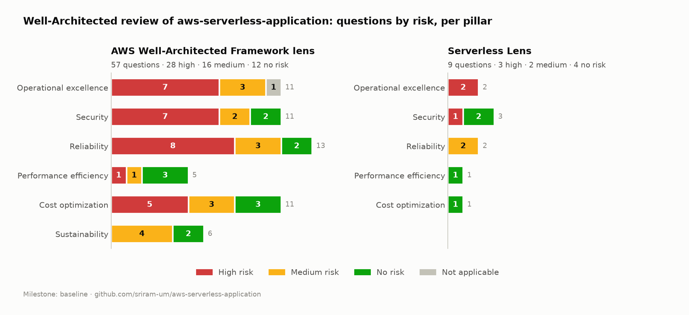

What the review of aws-serverless-application found, using the process in How to do a review.
| Workload | aws-serverless-application: Orders API (API Gateway, Lambda, DynamoDB global table, Cognito, WAF, optional DAX), AWS SAM, GitHub Actions |
| Lenses | AWS Well-Architected Framework (2025-02-25) · Serverless Lens (2020-02-04) |
| Reviewed | 2026-10-24, against main @ a25f479, plus read-only checks of the AWS account |
| Milestone | v1.0-baseline (#1) |
| Evidence | Every answer, with file/line evidence or the gap: answers/wellarchitected.json, answers/serverless.json |
| Official reports | PDF reports from the tool are generated with scripts/wa_review.py report and kept local — they contain the private account findings. Published: risk counts and per-question risks |

| Lens | Questions | High | Medium | No risk | Not applicable |
|---|---|---|---|---|---|
| Framework | 57 | 28 | 16 | 12 | 1 |
| Serverless Lens | 9 | 3 | 2 | 4 | 0 |
| Pillar (Framework) | High | Medium | No risk | N/A |
|---|---|---|---|---|
| Operational excellence | 7 | 3 | 0 | 1 |
| Security | 7 | 2 | 2 | 0 |
| Reliability | 8 | 3 | 2 | 0 |
| Performance efficiency | 1 | 1 | 3 | 0 |
| Cost optimization | 5 | 3 | 3 | 0 |
| Sustainability | 0 | 4 | 2 | 0 |
In one sentence: the application itself is well built — data protection, compute sizing, API access control, cost-aware design and serverless performance have no risk — but almost nothing around it is in place yet: no alerts, account-level security controls to strengthen, no budget, no safe deployment strategy, and recovery that has never been tested.
These questions came back with no risk. Each is backed by evidence in the answers files.
| Question | Why it has no risk |
|---|---|
| SEC — protect data at rest | KMS encryption on the global table in both regions, SSE on OrderStats, the DLQ, DAX and the API cache — all declared in the template |
| SEC — protect data in transit | HTTPS-only API, TLS to DAX, SigV4 for every AWS call, Cognito JWTs |
| Serverless SEC — control access to the API | Cognito authorizer is the default for every route; ownership enforced from the token's sub; analytics limited to the admins group |
| Serverless SEC — security boundaries | Four single-purpose functions, each with its own role scoped to one table; GitHub OIDC instead of stored keys |
| PERF — architecture selection, compute, data management | arm64; memory chosen with Power Tuning (512 MB, 38% faster than 256 MB); key-value access and pre-computed aggregates instead of scans; measured DAX, direct integration and replication latency |
| Serverless PERF / COST | Init optimised and measured; direct API Gateway → DynamoDB integration for reads; 14-day log retention; stream filter so non-INSERT events never invoke Lambda |
| REL — service architecture, network topology | Small domain-focused functions; OpenAPI contract for every route; DAX VPC planned across two AZs |
| COST — decommissioning, demand, cost of effort | teardown.sh removes everything billable and proves it; throttling and batching; everything scripted |
| SUS — software, hardware | Graviton, pay-per-request managed services, components with no use switched off |
The 31 high risk issues (28 + 3) fall into six themes.
OPS observability · OPS workload observability · OPS event response · OPS ready to support · REL monitor resources · REL withstand component failures · Serverless OPS health
There is a good CloudWatch dashboard, X-Ray tracing and structured logs — but not one CloudWatch alarm in the template. Lambda errors, API 5XX responses, throttles, messages in the dead-letter queue and stream lag are visible only to someone who happens to open the dashboard. API Gateway access logs are off, there are no KPIs/SLOs, and there's no playbook for "what do I do when X happens".
SEC securely operate · SEC identities · SEC detect and investigate events · SEC incident response
These came from read-only checks of the account (identity, logging and threat-detection settings), not from the repository. The specific results are kept private on purpose — a public list of an account's missing controls is a map for an attacker. What can be said: the most important findings of the whole review were here, about access to the account itself rather than the app, and they are first in the improvement plan. In addition, the app has no API Gateway access logs or WAF logs and no incident response plan, and the account is a single account shared by several projects.
OPS mitigate deployment risks · Serverless OPS lifecycle management · SEC application security · SEC protect compute · Serverless SEC application security
Tests and lint gate every deploy, but there is one environment (prod) in one account, every
deploy shifts 100% of traffic at once (no Lambda aliases / canary), a failed smoke test doesn't
roll back, and dependencies are never scanned (no Dependabot, no Amazon Inspector).
COST cloud financial management · COST govern usage · COST monitor usage · COST pricing models · COST data transfer
The design is cost-aware (toggles, teardown, estimate per scenario), but there is no AWS Budget
or cost anomaly alert in the account, the project tag is not confirmed as a cost allocation
tag, and pricing models and data transfer weren't analysed.
REL mitigate interaction failure · REL service quotas · REL back up data · REL fault isolation · REL test reliability · REL plan for DR
What exists: global table with < 1 s RPO, PITR, a scripted rebuild proven in 4 m 38 s. What's missing: boto3 timeouts are longer than the function timeout, GetOrder has no fallback when DAX is down, no reserved concurrency (one route can starve the others), OrderStats has no backup or rebuild script, a PITR restore has never been tested, there is no RTO, and nothing was ever load tested.
OPS priorities · OPS organization · PERF process · SEC data classification
No threat model, no performance KPIs or load test, no data classification. Partly expected for a one-person project — but a threat model and a one-page data classification are cheap and useful.
POST /orders is not idempotent — a client retry after a timeout creates a second order,
and order lines are written with batch_writer (not a transaction), so a failure mid-way can
leave a partial order (REL prevent interaction failure, Serverless REL resiliency).AdministratorAccess (assumable only by
CloudFormation), with no permission guardrails (SEC permissions).Before the review, a generic "serverless Well-Architected" checklist predicted three issues. None of them was real for this repo:
| Predicted | Reality (evidence) |
|---|---|
| x86 Lambdas at the default 128 MB | arm64 everywhere; 512 MB chosen with Power Tuning (template.yaml) |
| Logs that never expire | Explicit log groups with 14-day retention for every function |
| Wildcard IAM, no DLQ on async work | One table per role via SAM policy templates; stream consumer has retries, bisect and an SQS on-failure destination (template.yaml) |
…and it missed what actually matters: no alerts, gaps in the account's own security settings, no budget. Answer from the evidence, not from a checklist.
Ordered by risk removed per unit of effort and cost. Costs are estimates for this account's traffic; "expected" means the HRI should drop once the change is in place and the answer updated — it will be measured in the next milestone, not assumed.
| # | Change | Where | Effort | Running cost | Expected to address |
|---|---|---|---|---|---|
| 1 | Account security baseline — the private findings from theme B (identity, logging and threat-detection settings) | Account | ~1 h | $0 to a few $/month | B (all 4), permissions |
| 2 | AWS Budget (e.g. $10/month, email at 80% and 100% forecast) + cost anomaly monitor; activate project as a cost allocation tag |
Account | 15 min | $0 | D (financial management, govern, monitor) |
| 3 | CloudWatch alarms → SNS email: Lambda Errors and Throttles per function, API 5XXError, DLQ ApproximateNumberOfMessagesVisible > 0, aggregator IteratorAge |
template.yaml |
2 h | ~$0.10 per alarm/month (≈ $1) | A (all 7) |
| 4 | API Gateway access logs (JSON, 14 days); boto3 connect/read_timeout below the function timeout |
template.yaml, src/ |
1 h | cents | A, E (mitigate interaction failure) |
| 5 | Idempotent POST /orders (Idempotency-Key header + Powertools idempotency table) and TransactWriteItems for the order lines |
src/create_order, template.yaml |
½ day | on-demand table, cents | REL prevent interaction failure, Serverless REL resiliency |
| 6 | Safe deployments: AutoPublishAlias + DeploymentPreference: Canary10Percent5Minutes with the alarms from #3 as rollback triggers; Dependabot for pip and GitHub Actions |
template.yaml, .github/ |
½ day | $0 | C (deployment risks, lifecycle, app security, protect compute) |
| 7 | Reserved concurrency per function; DAX failure → fall back to DynamoDB | template.yaml, src/get_order |
2 h | $0 | E (fault isolation, mitigate interaction failure), Serverless REL inbound rates |
| 8 | Backups and recovery: PITR on OrderStats (or a rebuild-from-Orders script), a PITR restore drill, a written RTO, DeletionProtectionEnabled on both tables |
template.yaml, scripts/, README |
½ day | PITR: cents | E (back up data, plan for DR, test reliability) |
| 9 | WAF managed rule groups (Core rule set, Known bad inputs, IP reputation); optional Cognito TOTP MFA | template.yaml |
1 h | $1 per rule group/month (≈ $3) | SEC network protection |
| 10 | One-page threat model and data classification; performance KPIs and a small load test | docs/ |
½ day | load test: cents | F |
| Risk | Why it's accepted |
|---|---|
| Single AWS account, no Organization | Portfolio account; multi-account is the production answer and is noted as such |
| API tier only in us-east-1 (data is multi-region) | Region failover of the API needs a second Cognito pool and Route 53 failover — documented future work (README exercise 11) |
| No chaos engineering / game days / support plan | Out of proportion for a demo workload |
| Single-node DAX | Only deployed for demos (EnableCaching=false by default) |
| Organizational culture questions | Not applicable to a one-person project (marked N/A with a reason) |
Work through the improvement plan in small pull requests. After each one, update the affected
answers in answers/*.json, run scripts/wa_review.py apply, and when a group is done save a new
milestone (v1.1-…) and regenerate the chart with scripts/risk_chart.py to compare against this
baseline.